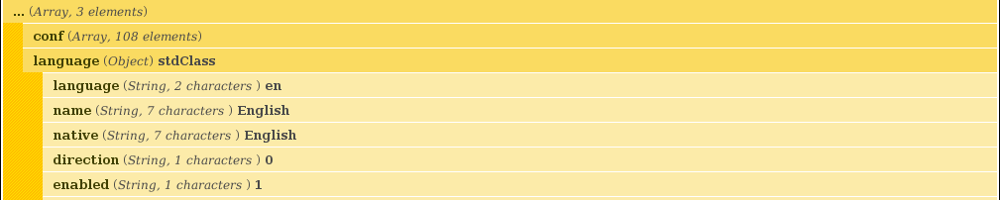
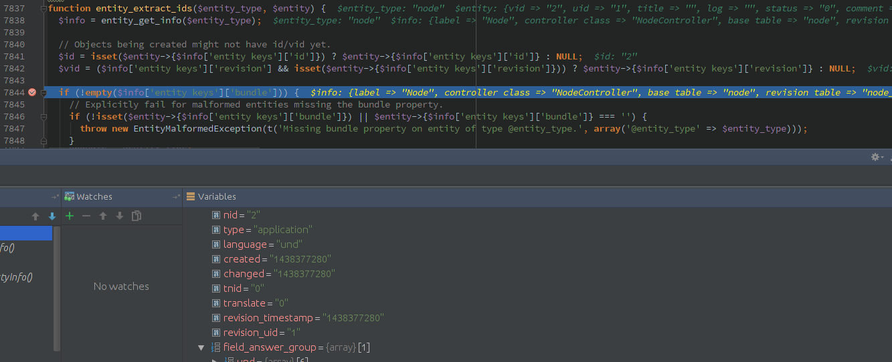
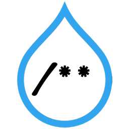

Drupal Custom Modules
Introducción a Custom Modules para Drupal 7
Creado por Jose Jiménez / @jjcarrion
Sobre mi
Jose Jiménez - jjcarrion


Developer at Wunderkraut Sweden
Introducción a Custom Modules para Drupal 7
Requisitos / Recomendaciones
Instalación local Drupal.
- LAMP/MAMP/WAMP
- Download Drupal from drupal.org
- Install drupal
Editor texto / IDE
Podemos usar cualquier editor de texto *limpio* / IDE, pero recomiendo un IDE que soporte Xdebug y Drupal Coding Standards
- PHPStorm (Not free)
- Netbeans (Free and open source)
- Eclipse (Free and open source)
- (Vim) (Free and open source)
- (SublimeText) (Not free)
- Etc. (no flames, please!)
Coding Standards
Drupal Coding standardshttps://www.drupal.org/coding-standards
- Nuestro código se va a mezclar con otro código
- Mejora la lectura del código
- Facilitan el mantenimiento
- Más profesional
Módulo Devel
Funciones de ayuda para Drupal developers.
 No hagáis push de dpm al repo y no olvidéis desactivar el módulo en producción.XDebug
Extensión PHP que nos permite debugging y profiling. Necesita configuración. (Avanzado)
 Virtual BOF Debugging PHPhttp://asociaciondrupal.es/es/content/virtual-bof-debugging-php
Mostrar errores (local)
Necesitamos tocar el php.ini
display_errors = On
error_reporting = E_ALL | E_STRICT
Drush
Que podemos decir de drush...
Para Drupal 8 también nos interesará Drupal Console
Examples
El módulo Examples es un conjunto de módulos donde se explican diferentes partes de Drupal
Primer módulo
¿Dónde van los módulos custom?
|-- sites
| |-- all
| | |-- modules
| | | |-- contrib
| | | |-- custom <--- HERE
o
|-- profiles
| |-- [profile_name]
| | |-- modules
| | | |-- contrib
| | | |-- custom <--- HERE
En Drupal 7, Nunca usar la carpeta /modules de la raiz
de la instalación
Pero en Drupal 8, tu módulo debe ir en la carpeta /modules.
Estructura de un módulo:
-
Archivos:
- mymodule.info - Module information file.
- mymodule.module - Main module file, contains all the Drupal hook implementations.
- mymodule.admin.inc - Administrative menu callbacks, add/edit forms.
- mymodule.pages.inc - Public menu callbacks, accessible by non-editor and non-admin users.
- mymodule.inc - Helper functions (e.g call classes from includes/ directory)
- mymodule.install - Module installer, contains schema information, code cleanup (e.g. remove custom variables in hook_uninstall)
- Carpetas:
- includes/ - Contains custom classes, views handlers, etc.
- templates/ - Theme related files (*.tpl.php files, sometimes preprocess files here)
- plugins/ - Custom Ctools plugins
- css/ - CSS styles
- images/ - Images and sprite graphics
- js/ - Javascript helper files
Los archivos .info y .module son obligatorios.
mymodule.info
name = Nombre del modulo.
description = Descripcion larga del modulo.
core = 7.x
package = Custom
dependencies[] = image
dependencies[] = text
features[features_api][] = api:2
features[field_base][] = field_answer_text
files[] = mymodule.controller.inc
mymodule.module
<?php
/**
* @file
* Code for the first example module.
*/
// Write your code here!
Hook system
DO NOT HACK CORE!
- Será muy difícil actualizar Drupal
- Se lo pondréis muy difícil a los que hereden el proyecto (https://www.drupal.org/project/hacked)
- Puede que estéis dejando vulnerabilidades de seguridad
Ejemplos
drush dl devel, admin_menu, adminimal_theme, adminimal_admin_menu, examples, module_filter